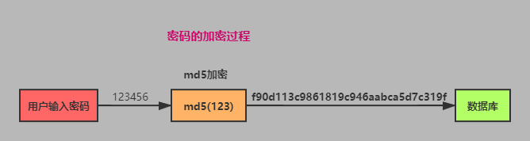

# security(安全)
# 1、SQL注入
窃取数据库内容，而应而该
输入 SQL 代码，在服务器上运行
select username, realname from users
where username='${name}' and password='${password}'
比如上面的 SQL 语句是凭借组成的，name 是用户输入的 如果用过户输入以下字段
会发生什么:
zhangsan' --
// 把用户名改为以上内容
select username, realname from users
where username='zhangsan' -- ' and password='123456'
我们发现密码被注释了，这样不用密码就可以登陆了。
解决方案：
mysql.escape 函数过滤
# 2、xss
窃取 cookie 内容
比如，网页嵌入提交标题时，设置标题为以下内容：
<script>alert(document.cookie)</script>
解决防范：
通过转移字符解决此类问题。
安装第三方工具：
npm i xss --save
使用：
const xss = require('xss')
// 一个函数，把发来的数据抱起来就可以
const title = xss(req.title)
# 3、密码加密
在数据库存放的是加密后的密码。

实现思路：
用户输入密码之后，通过md5 加密生成一个32位的字符串，nodejs提供了crypto模块。
crypto.createHash是一个哈希函数，你输入一个数字或字符串，函数会生成一个特定的字符串。
只有你输入同样的字符串才能输出同样的结果。
Nodejs提供了一个库 crypto
const crypto = require('crypto')
// 迷匙
const CECRET_KEY = 'JF_dfdfj2#'
// md5 加密
function md5(content){
let md5 = crypto.createHash('md5')
return md5.update(content).digest('hex')
}
// 加密函数
function genPassword(password){
const str = `password=${password}&key=${CECRET_KEY}`
return md5(str)
}
# 4、seo优化
# 4.1、收录查询：
site:www.baidu.com
站长工具查询seo排名：
# 4.2、站长平台：
// 百度
ziyaun.baidu.com
zhanzhang.so.com
zhanzhang.sogou.com
查询关键词的热度：
# 4.3、关键词挖掘工具的关键词：
- 百度推广
- 站长工具
- 爱站工具
- 百度指数
- 搜索引擎下拉（百度，淘宝等）
# 4.4、导航，url，TKD 优化
- url控制在3层以内
- T => title：80字内，突出关键词，关键词数量不要超过5个
- D => (meata标签) discription：不超200，尽量与title一致，对title的补充
- K =>(meata标签) keyword：不超100字符
# 4.5、关键词密度
keyword 2%-8%
h1-h6 标签的重视
strong标签有助于seo
img标签的alt属性
重定向，
404：
外链：其他网站的链接指向你的网站
链轮：‘
外链